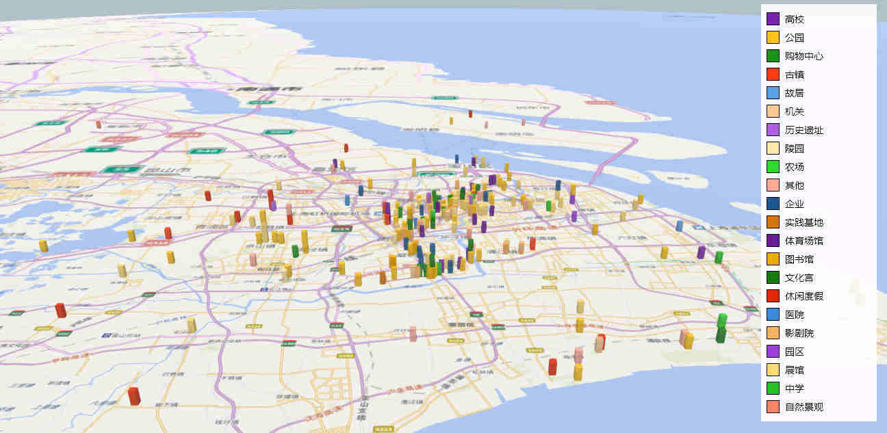
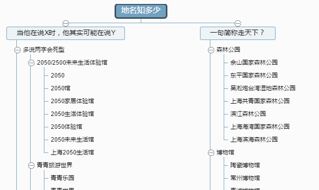
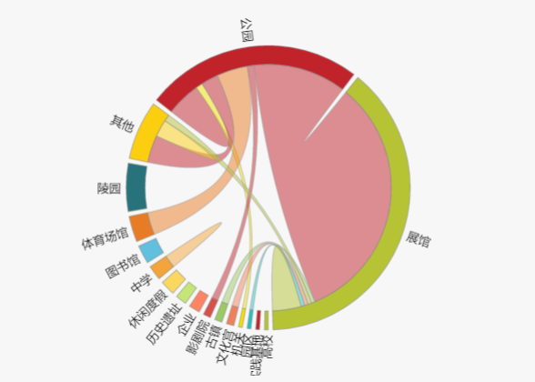

1.具有“地区特色”的地点分布
图1 社会实践旅游地图 图1-1 各类社会实践占比
图2 各类社会实践一览2.“热门”景点
图3 热门旅游景点可以分类再看看。
图4 学校与各类社会实践一览 图5 热门旅游景点对比3.为景点正名

图5 常见错误示意图4.学校出行模式
图6 出行模式 图7 出行模式-主要模式
图8 出行模式-按类别5.彩蛋：推荐的出行地
| 景点 | 评价分 | 评论数 |
|---|---|---|
| ERA-时空之旅 | 4.5 | 30 |
| 江海关 | 4.4 | 44 |
| 上海戏剧学院 | 4.4 | 20 |
| 上海浦东发展银行大楼 | 4.4 | 19 |
| 横沙岛 | 4.4 | 17 |
| 上海音乐学院 | 4.4 | 17 |
| 上海当代艺术博物馆 | 4.3 | 47 |
| 广富林遗址 | 4.3 | 47 |
| 上海邮政博物馆 | 4.3 | 45 |
| 圆明园路 | 4.3 | 43 |
| 金泽古镇 | 4.3 | 39 |
| 丁香花园(Lilac Garden) | 4.3 | 34 |
| 上海琉璃艺术博物馆 | 4.3 | 27 |
| 上海市文化广场 | 4.3 | 19 |
| 汇中饭店大楼 | 4.3 | 17 |
| 韩湘水博园 | 4.3 | 16 |
| 上海历史博物馆 | 4.2 | 36 |
| 巴金故居 | 4.1 | 49 |
| 静安雕塑公园 | 4.1 | 48 |
| 东海大桥 | 4.1 | 32 |
| 方塔公园 | 4.1 | 30 |
| 崇明学宫 | 4.1 | 29 |
| 上海外国语大学 | 4.1 | 27 |
| 上海新国际博览中心 | 4.1 | 25 |
| 奉贤菜花节 | 4.1 | 25 |
| 上海图书馆徐家汇藏书楼 | 4.1 | 24 |
| 嘉定孔庙 | 4.1 | 21 |
| 华东政法大学(松江校区) | 4.1 | 19 |
| 世纪广场 | 4.1 | 18 |
| 外滩情人墙 | 4.1 | 17 |
| 世博轴 | 4.1 | 16 |
| M50半岛文化创意园区 | 4.1 | 16 |
| 蔡元培故居 | 4.1 | 15 |
| 金山滨海公园 | 4.1 | 15 |
| 上海长江大桥 | 4.1 | 15 |
| 交通银行大楼 | 4 | 46 |
| 上海孙中山故居纪念馆 | 4 | 43 |
| 陆家嘴中心绿地 | 4 | 43 |
| 延中绿地 | 4 | 42 |
| 上海师范大学 | 4 | 41 |
| 赵屯 | 4 | 40 |
| 上海红坊国际文化艺术社区 | 4 | 39 |
| 八号桥创意园区 | 4 | 35 |
| 有利大楼 | 4 | 30 |
| 南汇嘴观海公园 | 4 | 25 |
| 州桥老街 | 4 | 24 |
| 上海外滩气象信号台 | 4 | 24 |
| 上海东海影视乐园 | 4 | 18 |
| 复旦大学江湾校区 | 4 | 17 |
| 金鳌山公园 | 4 | 16 |
| 曲水园 | 4 | 16 |
| 古华公园 | 4 | 15 |